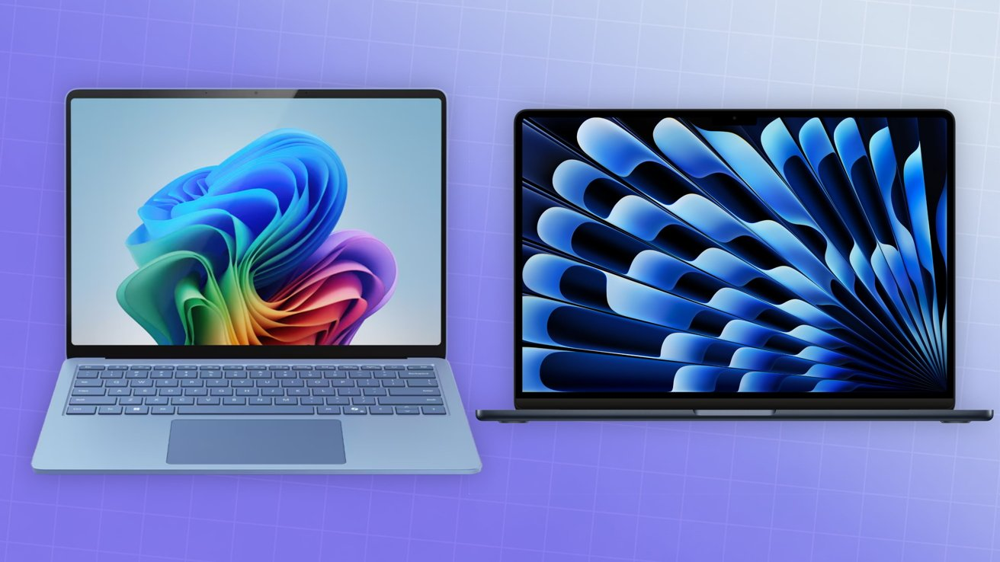
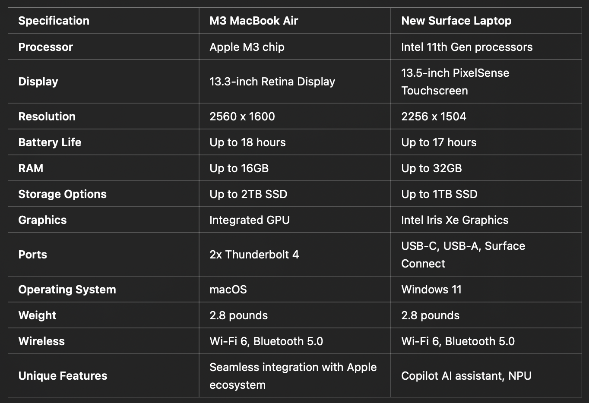

Microsoft's New Surface Laptop vs Apple's M3 Macbook Air
Overview
In the ever-evolving world of technology, the competition between Apple and Microsoft continues to intensify. With the release of the M3 MacBook Air and the new Surface Pro 11th Edition with Copilot+, consumers are faced with a choice between two cutting-edge devices. Both laptops boast impressive features and performance capabilities, but they cater to slightly different user needs and preferences. This article aims to compare these two devices, examining their specifications, unique features, and overall performance. Additionally, we will delve into the new Neural Processing Unit (NPU) technology and Microsoft’s inbuilt Copilot feature, before concluding with a discussion on whether this comparison remains fair with the anticipated release of Apple’s M4 chip in the near future.
Specifications Comparison
When comparing the M3 MacBook Air and the Surface Pro 11th Edition with Copilot+, it is essential to look at their specifications side by side to understand their strengths and weaknesses.
Processor and Performance
The M3 MacBook Air features Apple’s custom-designed M3 chip, known for its high performance and energy efficiency. The chip combines a powerful CPU, GPU, and neural engine, delivering excellent performance for both everyday tasks and demanding applications. On the other hand, the Surface Pro 11th Edition is powered by Intel’s 11th Gen processors, offering strong performance and integrated Intel Iris Xe Graphics. While both devices provide robust computing power, the M3’s unified architecture may offer better optimization for macOS.
Display and Graphics
The MacBook Air’s Retina display provides excellent color accuracy and brightness, making it suitable for creative professionals. The Surface Pro’s PixelSense display, with a slightly higher resolution, supports touch and pen input, adding versatility for tasks like drawing and note-taking. Both devices offer integrated graphics, with the M3 potentially having an edge in efficiency due to its unified memory architecture.
Battery Life
The M3 MacBook Air boasts an impressive battery life of up to 18 hours, making it ideal for users who need long-lasting performance on the go. The Surface Laptop offers up to 17 hours, which is also substantial but slightly less than the MacBook Air.
Connectivity
The MacBook Air features two Thunderbolt 4 ports, providing fast data transfer and versatile connectivity options. The Surface Pro offers a broader range of ports, including USB-C, USB-A, a microSD card reader, and the Surface Connect port, making it more flexible in terms of connectivity and peripheral support.
Unique Features
Apple’s ecosystem integration is a significant advantage for MacBook Air users, providing seamless connectivity and continuity across Apple devices. The Surface Pro stands out with its Copilot+ feature, an AI assistant that enhances productivity by automating tasks and providing real-time suggestions, leveraging the device’s NPU.
The Neural Processing Unit (NPU) is an emerging technology designed to handle artificial intelligence (AI) and machine learning (ML) tasks more efficiently than traditional CPUs or GPUs. In the context of the Surface Pro 11th Edition, the NPU plays a crucial role in enhancing the device’s capabilities, particularly in conjunction with Microsoft’s Copilot+ feature.
Key Features of Copilot+
1. Smart Recommendations :
Copilot+ provides context-aware recommendations based on the user’s activity. For example, it can suggest relevant documents, emails, or applications needed for a specific task. This feature helps streamline workflows and reduces the time spent searching for information.
2. Task Automation :
One of the most significant advantages of Copilot+ is its ability to automate repetitive tasks. Whether it’s sorting emails, scheduling appointments, or organizing files, Copilot+ can handle these tasks with minimal input from the user, freeing up time for more critical activities.
3. Natural Language Processing :
With advanced natural language processing (NLP) capabilities, Copilot+ allows users to interact with their device using voice commands or text input. This feature can be used to perform searches, initiate actions, or control applications, making the interaction more intuitive and efficient.
4. Enhanced Collaboration :
Copilot+ integrates seamlessly with Microsoft Teams and other collaboration tools, providing features like real-time language translation, automatic meeting summaries, and intelligent scheduling. These capabilities enhance team communication and productivity, especially in a remote or hybrid work environment.
5. Personalized Insights :
By analyzing usage patterns, Copilot+ can offer personalized insights and suggestions to improve productivity. For example, it might recommend scheduling breaks based on your activity levels or suggest more efficient ways to complete a recurring task.
Further detail on the NPU
An NPU is a specialized processor designed to accelerate the computational processes involved in AI and ML tasks. Unlike general-purpose processors, NPUs are optimized for parallel processing and can handle the large volumes of data required for tasks such as image and speech recognition, natural language processing, and other AI-driven applications.
Benefits of the NPU
1.Efficiency: NPUs are more energy-efficient than traditional processors when performing AI tasks. This efficiency translates to longer battery life and less heat generation, which is particularly beneficial for mobile devices like the Surface Pro.
2.Speed: NPUs can process AI and ML tasks much faster than CPUs or GPUs. This speed enhancement allows for real-time processing and responsiveness, which is critical for applications that require quick decision-making, such as voice assistants and augmented reality.
3.Performance: By offloading AI and ML tasks to the NPU, the main CPU and GPU are freed up to handle other processes, resulting in overall improved performance and multitasking capabilities.
How Microsoft Uses the NPU in the new Surface Pro
NPU in the Surface Pro 11th Edition
In the Surface Pro 11th Edition, the NPU is leveraged primarily to enhance the functionality of Microsoft’s Copilot+. Copilot+ uses AI to assist users in various ways, from providing smart recommendations to automating repetitive tasks.
Here are some examples of how the NPU benefits the user experience:
• Real-Time Language Translation: The NPU enables fast and accurate language translation, allowing users to communicate seamlessly in different languages during video calls or when traveling.
• Enhanced Security: AI-powered security features, such as facial recognition and anomaly detection, are more efficient and responsive, providing a higher level of protection for users.
• Productivity Tools: The NPU helps in optimizing productivity tools by predicting user actions and automating routine tasks, such as organizing emails, scheduling meetings, and managing documents.
By incorporating an NPU, Microsoft ensures that the Surface Pro 11th Edition is not only powerful but also intelligent, adapting to user needs and providing a more intuitive and efficient experience.
Microsoft’s Copilot+ is a standout feature in the Surface Pro 11th Edition, leveraging advanced AI and machine learning capabilities to enhance productivity and user experience. Built directly into the operating system, Copilot+ is designed to assist users in various tasks, making the Surface Pro a more intelligent and efficient device.
Apple's potiental counter-attack to the new NPU
The anticipated release of the M4 chip in future MacBook Air models adds another layer of consideration following the release of the new IPad Pro that contains the base M4 chip.
1. Performance Boost :
The M4 chip is expected to build on the foundation laid by its predecessors, delivering even greater performance. This likely includes faster processing speeds, improved graphics performance, and enhanced efficiency for both everyday tasks and demanding applications. With each iteration, Apple has consistently pushed the envelope, and the M4 chip is anticipated to continue this trend.
2. Enhanced Neural Engine :
The M4 chip will likely feature an upgraded neural engine, further enhancing capabilities in AI and machine learning. This improvement would enable more sophisticated on-device processing, such as advanced image and video editing, real-time language translation, and more efficient power management.
3. Battery Life and Efficiency :
Apple’s silicon has been renowned for its power efficiency, and the M4 chip is expected to continue this legacy. Users can anticipate longer battery life, ensuring that the MacBook Air remains a reliable companion for all-day use without frequent recharging.
4. Graphics and Media Capabilities :
For creative professionals, the M4 chip might offer significant improvements in graphics processing, making it an even more powerful tool for video editing, 3D rendering, and other graphics-intensive tasks. Enhanced media capabilities could also translate to better support for high-resolution displays and external monitors.
Final Thoughts
For users making a decision today, the choice between the M3 MacBook Air and the Surface Pro 11th Edition with Copilot+ should be based on specific needs and preferences. If battery life, seamless integration with other Apple devices, and a powerful unified chip are priorities, the M3 MacBook Air is an excellent choice. Conversely, if versatility, a broader range of connectivity options, and advanced AI-driven productivity tools are more important, the Surface Pro 11th Edition stands out.
As technology continues to evolve, keeping an eye on future developments, such as the M4 chip, will be crucial for making informed decisions. Both Apple and Microsoft are committed to pushing the boundaries of innovation, ensuring that consumers have access to cutting-edge technology that enhances their productivity and user experience.